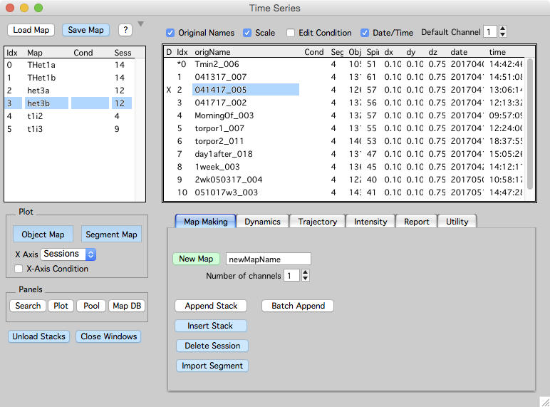

Making a map

A map is a time-series of stacks. You create a map by appending stacks from the stack browser. Once a map is made it can be saved, re-opened, annotated, and browsed using the time-series panel.
The time-series panel shows a list of open maps on the left. When a map is selected (het3b in this example), a list of sessions in the map are shown on the right (in this example there are 12 sessions).
Pre-process your raw data
Map Manager will only import single channel .tif stacks. If your stacks have two or more color channels, they need to be de-interleaved into separate .tif files, one .tif file per color channel. We have Fiji plugins to do exactly this for Zeiss LSM and CZI, Prairie View, and ScanImage.
- ScanImage, use bAlignBatch
- Zeiss, use bFolder2MapManager
- Prairie, use bPrairie2tif
1. Open and initialize Map Manager
- Open Igor Pro with MapManager.ipf
- Click on the empty command window to activate Map Manager and its menus
- Open the time-series window with menu ‘MapManager - Time series’.
2. Make a new map
- In the time series window Map Making tab, enter a new map name and choose the number of channels for each stack in your map.
- Create a new map with ‘New Map’.
- Append a stack from the Stack Browser with ‘Append Stack’.
- Repeat # 3 for each stack.
- Save the map with ‘Save Map’ button.
Important
- When you make a map, you need to choose the ‘Number Of Channels’. Map Manager will only allow one choice of ‘Number Of Channels’ per map. You cannot mix stacks with different numbers of channels within a map.
- Make sure the scale of each imported stack is correct. It is hard to change the scale later. If you use the provided Fiji plugins this is usually taken care of. You can set the scale of a stack in its stack window with ‘shift+p’.
- Make sure the sessions in your map are imported in the correct order. It is hard to change the order later.
- As you import stacks from the stack browser there are some rules that must be followed. You will be prompted when you break these rules. In particular:
- The stack scale must be set. Set the scale of a stack in a stack window with shift+p.
- The stack must be loaded. Double click the stack in the stack browser to load a stack.
- When importing 2 or 3 channel stacks, all channels must be loaded. Load each channel in the stack browser by double-clicking on the stack in the list.
- When importing into a map, the first channel (ending in _ch1) must be selected in the stack browser.
- New maps are saved to a default hard-drive folder. The default folder is specified in the Hard Drive Paths panel.
Congratulations, you just made a Map Manager map. The rest of this tutorial covers tracing dendritic segments, adding spines, and connecting spines across timepoints.
3. Create dendritic tracings
Dendritic tracings (line segments) are first specified with control points and then fit using a custom FIJI plugin. Before fitting a line in FIJI, you need to specify the path to your FIJI application in the Hard Drive Paths panel.
- Double-click the first session in your map (in the time-series panel) to open a stack window.
- Create a line segment by follow the instruction in stack annotations.
- Turn on the ‘Segment’ edit checkbox.
- Click the ‘+’ button to create a new (empty) segment.
- Create Control Points along a segment with shift+click. Remember, all points are in 3D, make sure the points are in the correct imaging plane.
- Delete control points with keyboard ‘delete’.
- Move control points with right-click menu ‘Move’.
- Once control points are made, fit the backbone line in Fiji. Right-click on your segment in the list and select ‘Make from control points - Fiji’.
- Repeat steps # 1 and # 2 for each session in your map. Making the same line segment in each session. As you make control points, be sure they are in the same direction along the segment for each session.
- Set a pivot point in each line segment. Do this by clicking a point in the segment, right-click and select the ‘Set As Segment Pivot’ menu. The pivot point should refer to the same region of the segment across all session. A good strategy is to choose a region of the segment near an obvious spine that is present in all sessions. Another strategy is to choose a pivot point where some other segment (dendrite) crosses near your segment as these tend to remain stable across time. Try and put the pivot point near the center of the segment, do not place it at either end. The pivot point is used to calculate a line distance along the segment (in um) which in turn will be used to auto-guess connections between spines across sessions.
Tip. When specifying control points and setting segment pivots, you can open multiple stack windows at the same time. Just double-click on each session in the time-series panel. This way, you can see the line segments you are making in each session of your map.
4. Connect your line segments together
- Close all stack windows using the Close Windows button in the time-series panel.
- Open a new stack run by right-clicking a session in your map and selecting the ‘Plot Run +- All’ menu.
- Turn on the ‘Segments’ edit checkbox in the left control bar of a stack window. Open the left control bar with keyboard ‘[’.
- Sequentialy connect your line segment from one timepoint to the next
- Select the source timepoint segment (for example, timepoint 1). Make sure you select a point on the segment backbone line.
- Select the destination timepoint segment (for example, timepoint 2). Again, make sure you select a point on the segment backbone line.
- In the destination timepoint window (e.g. timepoint 2), press keyboard ‘p’ for Persistent (or use right-click menu ‘Dynamics - Make Segment Persistent’).
Tip. You can see how your segments are connected by plotting a 'Segment Map' from the time-series panel. In the segment map window, right-click a segent and select 'Plot Run' to plot a run of segments.
5. Mark spines in each timepoint
- Make sure ‘Segments’ edit checkbox is off.
- Open a single timepoint by double clicking a session in the list.
- See stack annotations to mark spines along your new segment.
- Create a spine with shift+click. The spine should be marked at the membrane limit of the spine head, somewhere near the tip of the spine. Remember, all points are in 3D, take care in creating the spine in the correct image plane.
- Move a spine with right-click ‘Move’.
- Delete a spine with keyboard ‘del’ or right-click ‘Delete’.
- All spines are automatically connected to the dendritic segment with a line. Edit the connection point with right-click ‘Manual Connect’.
Tip. Be very liberal in your scoring, mark anything you think might be a spine. All annotations can be flagged as 'bad' using the right-click menu 'bad'. Bad objects stay in the database but are **not** included in the final analysis. As your datasets grow, marking putative spines with an annotation and then as bad allows you to return to a given image stack and see you already decided **not** to include a putative spine in your analysis.
6. Connecting objects from one timepoint to the next
Use the Find Points Panel to visualize and connect objects between two timepoints. Find Points will generate an automatic guess for the best connections and allow you to set them manually. This automatic guess is using the pivot point in your dendritic segment, if this pivot point does not correspond to a similar region of the segment between timepoints, the guess will be incorrect.
This is the core of Map Manager and you will spend most of your time doing this.
7. Curating your connected objects
7.1 Review your work by using search to query all addition, subtraction and transient objects
- Open the search panel from the time-series panel with the ‘Search’ button.
- Search added object with the ‘Addition’ button.
- All added spines will appear as a list in the search results.
- Right-click on a spine and select ‘plot run +- 1’ to bring up a spine run.
- Do the same by searching for ‘Subtraction’ and then ‘Transient’
7.2 Browse the connections visually and edit as necessary
You need to verify the connectivity of spines between all timepoints in the map. If your map has 4 timepoints, you need to verify the spine connections between timepoint 1-2, timepoint 2-3, and timepoint 3-4.
- Open a run plot of three sequential timepoints by right-clicking a spine in the object map and selecting ‘plot run +- 1’. Open an object map with the ‘Object Map’ button in the time series panel.
- In the run plot windows, select a spine in the middle timepoint with ctrl+click. This will bring up the spine and its associated connections in all windows of the spine run. If there is no spine in a given timepoint, the image will be snapped to where the spine ‘would-be’. This is using segment pivot points, if they are not specified or poorly marked, this snapping will not work.
- From the middle timepoint spine selection, go to the next spine along the segment using keyboard ctrl+right. Go to the previous spine along the segment using keyboard ctrol+left.
- Correct any errors in the spine dynamics using keyboard ‘a’ for addition, ‘s’ for subtraction, and ‘p’ for persistence. See run plot for details.